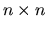
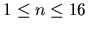

| Unscrambling Images |
Quadtrees are commonly used for encoding digital images in a compact form. Given an  image (where n is a power of 2, ), its quadtree encoding is computed as follows. Start with a quadtree with exactly one node, namely the root, and associate with this node the square region for the entire image. Then the following is performed recursively:
When the process terminates, we obtain a quadtree in which every internal node has four children. Every leaf node has an associated value representing the intensity of the region corresponding to the leaf node. An example of an image and its quadtree encoding is shown below.
We have assumed that the four children represent, from left to right, the upper left, upper right, lower left, and lower right quadrants, respectively.
To easily identify a node in a quadtree, we assign a number to each node by the following rules:
Images encoded as quadtrees can be encrypted by a secret password as follows: whenever a subdivision is performed, the four branches are reordered. The reordering may be different at each node, but it is completely determined by the password and the node number.
Unfortunately, some people use the ``save password'' feature in the encoding program and use the same password for multiple images. By observing the encoding of a well-chosen test image, any image encoded with the same password can be decoded without the password. In this test image, each pixel has a distinct intensity from 0 to n2 - 1 arranged from left-to-right, top-to-bottom in increasing order. An example for n = 16 is given below:
You managed to gain access to the encoding program and used it to encode the test image. Given the quadtree encoding of the test image, write a program to decode any other image encoded with the same password.
k intensity
which specifies that the node numbered k is a leaf node with the specified intensity as the associated leaf value. Nodes not specified are either internal nodes or absent in the quadtree. You may assume that all intensities are between 0 and 255, inclusively. You may also assume that each quadtree encoding is a valid output obtained from the encoding algorithm described above.
2 2 4 1 3 2 2 3 0 4 1 4 1 23 2 123 3 253 4 40 4 16 5 8 6 9 7 13 8 12 9 0 10 4 11 1 12 5 13 2 14 3 15 7 16 6 17 10 18 11 19 15 20 14 7 2 10 3 20 4 30 5 41 6 42 7 44 8 43
Case 1 253 40 123 23 Case 2 10 10 20 20 10 10 20 20 41 42 30 30 43 44 30 30